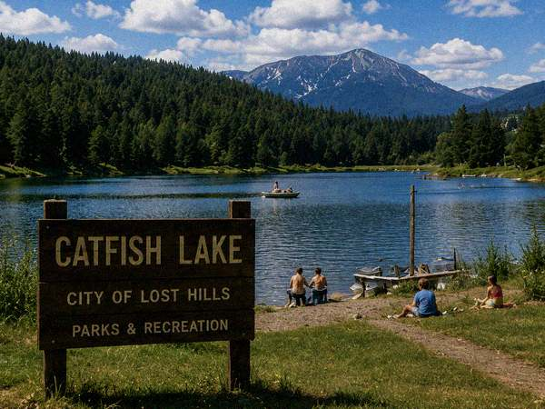
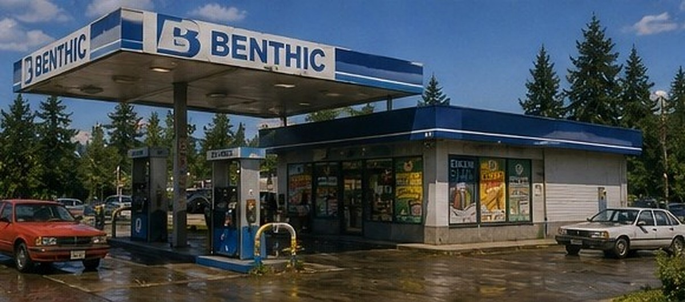

[#]Catfish Lake Recreation Area
Catfish Lake is the centerpiece of Lost Hills' recreation system: 1,140 acres of cold, deep water surrounded by old-growth forest, with a public swim beach, three boat launches, ten miles of shoreline trail, and family picnic grounds. Permits are available at Benthic Gas & Food Mart on Catfish Lake Road.

Activities
- Fishing — trout, bass, kokanee, channel catfish. State license + Lost Hills permit required.
- Boating — three launches (south, west, north). 10 hp max for non-permit craft.
- Swimming — lifeguarded beach (south pier), Memorial Day–Labor Day.
- Trails — ten-mile shoreline loop, marked spurs to ridge viewpoints.
- Picnicking — family grounds at the south pier, group sites by permit.
- Camping — west shore campground, 36 sites.
Fish Species Guide
| Species | Typical Depth | Season | Notes |
|---|---|---|---|
| Rainbow Trout | 20–60 ft | Year-round | Stocked by state; highest density south shore |
| Kokanee Salmon | 40–80 ft | Spring–Fall | Native run; do not remove from water west of buoy line |
| Largemouth Bass | 10–25 ft | May–Sep | Good near the north-shore deadfall structure |
| Yellow Perch | 15–40 ft | Year-round | Good ice fishing; west shore coves |
| Channel Catfish | bottom-feeding | Summer | Night fishing; best at west launch, pre-permit-change |
| Unclassified (deep) | > instrument range | [entry pending] | Sonar returns from below 1,200 ft. No classification on record. Manufacturer consulted. |
Permit Information
Day-use permits are $2.00 per vehicle and may be purchased at:
- Benthic Gas & Food Mart (24 hours)
- City of Lost Hills Public Works Office (M–F)
- Sezzler Lost Hills front desk (guests)

Multi-day, group, and commercial permits are available. Boat launch permits are separate. NOTICE (effective 05/19/1993): All permits are subject to on-shore verification by the Catfish Lake Environmental Monitoring crew while the new monitoring array is calibrated. Boating hours are temporarily 06:00–15:00. Night access is closed. Camping reservations are honored but campers may not approach the water after sunset until further notice.
Lake Depth (selected surveys)
| Year | Method | Max Depth | Note |
|---|---|---|---|
| 1962 | Wire-line sounding | 312 ft | State Dept. of Game |
| 1979 | Single-beam sonar | 344 ft | Shadewater consult. |
| 1989 | Single-beam sonar | 361 ft | Park ranger survey |
| 1993 | Monitoring array, multi-beam | > instrument range | Survey returned no bottom return; calibration ongoing. |
| 1993 (resurvey) | Monitoring array | No bottom return at 1,200 ft. [note removed] | [entry pending Clerk approval — see recovered field log] |
Trails & Campground
| Trail | Distance | Difficulty |
|---|---|---|
| South Pier Loop | 2.1 mi | Easy |
| West Shore Trail | 3.6 mi | Moderate |
| North Shore Trail | 4.8 mi | Moderate |
| Tabor Ridge Spur | 1.3 mi (one-way) | Strenuous |
| North Trail Extension | 0.8 mi [survey conflict] | unknown |
West shore campground: 36 sites, fire rings, pit toilets. Water at the south pier and the west-shore pump station. North shore tent sites closed effective 05/19 pending monitoring crew access review.
Environmental Monitoring
The Catfish Lake Environmental Monitoring Array is a Shadewater-built system of 36 submerged sensors and 8 floating buoys, deployed for the 1993 Systems Conference and intended to provide real-time water and sediment telemetry to the City and to the State Department of Ecology.
Reports From Visitors
The City has received several non-emergency reports from visitors. These are published here for transparency and are not civic advisories:
- Lights observed below the surface, south pier (05/19, 05/20, 05/21) [report withdrawn]
- Phone reception poor near the north launch (acknowledged by PCT)
- Compass deflection at the north shore (acknowledged by Public Works)
- "The lake felt closer than yesterday" (no civic interpretation)
- 05/21: report received, content not transcribed, author did not leave contact info
Family Picnic Areas
South Pier picnic grounds offer 24 tables, a pavilion, and a lifeguarded beach. Reservation by permit through Benthic.
Boat Launch Status
| Launch | Status |
|---|---|
| South (main) | Open 06:00–15:00 |
| West shore | Open 06:00–15:00 |
| North | Closed pending review |
Weekly Fishing Report — May 1993
Reports filed by volunteer fishing coordinator J. Rusk. Filed weekly or after significant conditions. Reports after 05/20 not received. Account jrusk removed from CityNet directory 05/22.
| Date | Conditions | Report |
|---|---|---|
| 05/10 | Clear, 62°F | Good trout action south shore. Rainbow running well below the beach. West cove yielding bass. Kokanee spotted near buoy 4. Water clarity excellent. |
| 05/13 | Partly cloudy | North launch quiet. Perch good at the deadfall (west). One large catfish reported near the pier after dark — no permit required, night access still open. Water smells clean. |
| 05/15 | Overcast, wind | Conference crew began deploying the monitoring array. South pier closed to recreation during deployment (AM only). Fishing resumed by 13:00. Bass activity good in west cove. Sonar buoys visible from shore. |
| 05/17 | Clear | Conference week. More foot traffic than usual. Fishing good regardless — trout active off the point. The monitoring crew's equipment running all day. Heard the buoys chirping at 3AM but that is probably normal for equipment like that. |
| 05/19 | Hazy, 58°F | Permit rules changed today. Fishing hours now 06:00-15:00 only. Night access closed. North launch also closed. The crew told me the sonar equipment returned some unusual readings from deep water but declined to say what. My depth finder shows nothing below about 60 ft on the south side — then just noise. Trout still active near surface. Compass on the boat running about 8 degrees off today; will check calibration tonight. |
| 05/20 | Cool, 54°F | Temperature on the south pier sensor is reading about 10 degrees colder than my thermometer at the surface. Trout sluggish, almost no surface activity for the first time this month. Bass completely absent from west cove. The monitoring crew spent most of the day at the north launch with what looked like different equipment than yesterday. Payphone at Benthic rang for about four minutes when I walked past — no one picked up on the other end when I answered. Came back tomorrow for one more look. [report filed 05/20 23:42 — author account removed 05/22] |
| 05/21 | [not filed] | [report not received — entry stub auto-restored from B12 — no content] |
Selected Civic Notices
| Date | Notice |
|---|---|
| 05/15 | Catfish Lake Environmental Monitoring Array deployment complete. Array goes live with the opening of SASC. |
| 05/19 | Updated permits required pending calibration. Night access closed. |
| 05/20 | South pier temperature anomaly noted. Department of Ecology consulted. Anomaly is below 36°F at depth. [edit pending] |
| 05/21 | [entry removed at request of Clerk] — refer to the News Archive. |
| ??/?? | Resurvey: no bottom return at 1,200 ft. Calibration pending; figure withheld from public archive. |
UNDER CONSTRUCTION Catfish Lake is a working lake. Please obey posted signage and the on-shore monitoring crew.